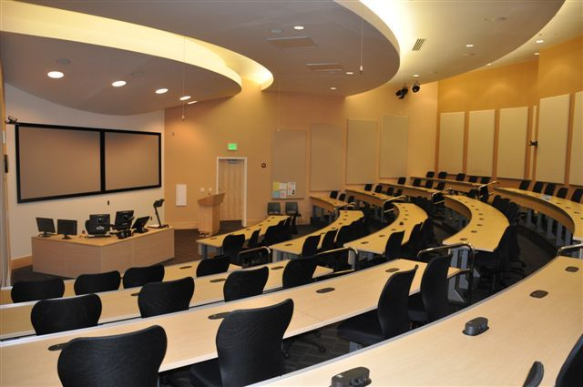

About EFA College

Education for All College (EFAC),
formerly EFAC is a College of higher education located in Kolkata, West Bengal, India.
The institution offers under-graduate and post-graduate courses in Engineering, Bio-technology,
Medicine, Management, Architecture. It provides the best educational facilities since 1995.
Placement
The educational group has strong placement cell. Four placement officers under the chairmanship
of the Institute’s director work as placement cell. Very effective Campus Interview is a regular
feature of the institute.